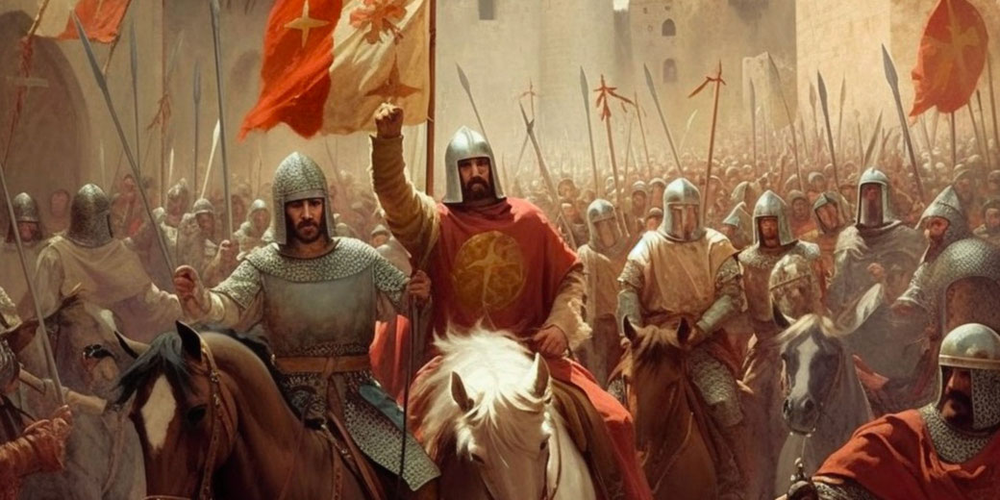

ჯვაროსნული ომები დაიწყო XI საუკუნის მიწურულს და გრძელდებოდა XI – XIII
საუკუნის განმავლობაში. ჯვაროსნული ომების მთავარი მიზანი იყო მუსლიმური
სამყაროს დაპყრობა და ქრისტიანობის გავრცელება. ჯვაროსნულმა ომებმა
ეკონომიკური და პოლიტიკური თვალსაზრისით სრულიად გარდაქმნა შუა საუკუნეების
ევროპული და აღმოსავლური სამყარო. ქრისტიანთათვის ჯვაროსნული ომები წმინდა
იდეას წარმოადგენდა.
ლაშქრობის მონაწილეს სიმბოლურად ტანსაცმელზე მიკერებული ჰქონდა ჯვარი, რის
მიხედვითაც ეწოდათ „ჯვაროსნები“.
XI საუკუნის ბიზანტიის კეისარმა, ალექსი I კომნენოსმა, სელჩუკების წინააღმდეგ
ბრძოლაში დახმარებისათვის მიმართა ევროპას. ამას მოჰყვა რომის პაპის ურბან
II-ის გადაწყვეტილება, რომელიც 1095 წელს წმინდა მიწის, იერუსალიმის,
ურწმუნოთა ხელიდან გათავისუფლებას მოითხოვდა. დაპყრობით ომებს კათოლიკურმა
ეკლესიამ რელიგიური ხასიათი მისცა. 1096-1270 წლებში მოეწყო 8 ჯვაროსნული
ლაშქრობა. ფეოდალური ჩაგვრისა და სიდუხჭირისაგან თავის დახსნის მიზნით
ლაშქრობებში მონაწილეობდა დაბალი სოციალური ფენა. ჯვაროსნულ ლაშქრობებს მხარი
დაუჭირეს იტალიის ქალაქებმა ვენეციამ, გენუამ და პიზამ.
ახლა კი მოდი მოკლედ განვიხილოთ ყველა ჯვაროსნული ლაშქრობა :)
I ჯვაროსნული ლაშქრობა
პირველი ჯვაროსნული ლაშქრობა განხორციელდა 1095 წელს რომის პაპი ურბან II-ის
ინიციატივით. მას სურდა მუსულმანთაგან წმინდა ქალაქი იერუსალიმისა და წმინდა
მიწის განთავისუფლება. თავდაპირველად პაპის მიმართვა მხოლოდ საფრანგეთის
რაინდებს გაეგზავნა, თუმცა შემდეგში ლაშქრობა სრულმასშტაბიან სამხედრო
კამპანიად გადაიქცა, ხოლო ამ იდეამ მთელი დასავლეთ ევროპის სახელმწიფოები
მოიცვა. ყველა ეროვნების რაინდი ქაოტურად დაიძრა აღმოსავლეთისკენ ხმელეთითა
და ზღვით და 1099 წლის ივლისში იერუსალიმი აიღეს. ამ ლაშქრობისას დაარსდა
იერუსალიმის სამეფო და სხვა ქრისტიანული სახელმწიფოები მის გარშემო.
რა გახლდათ პირველი ჯვაროსნული ლაშქრობის მიზეზი?
მიზეზი კი ის გახლდათ, რომ 1095 წელს ბიზანტიის იმპერატორმა ალექსი I-მა
რომის პაპს თხოვნით მიმართა. იმპერატორი ამბობდა, რომ თურქ-სელჩუკთა იმპერია
ძალიან გაძლიერებულიყო. მუსლიმები კი დიდ საფრთხეს წარმოადგენენ ქრისტიანული
სამყაროსათვის. მათ მიერ დაპყრობილი ქალაქი კი ნიკეა საკმაოდ ახლოს
მდებარეობდა კონსტანტინოპოლთან, ბიზანტიის დედაქალაქთან. თურქები ასევე
აკონტროლებდნენ ანატოლიას. რომის პაპი ხედავდა ევროპაში შექმნილ
მდგომარეობას. იმ დროისთვის იქ უამრავი ღარიბი რაინდი და გლეხი იყო. ახალი
ლაშქრობა ბიზანტიის დასახმარებლად და მუსლიმების წინააღმდეგ მათთვის იდეალური
იქნებოდა, რადგან იმ დროისთვის ომი შესანისნავი საშუალება იყო მათთვის
ქონების დასაგროვებლად. აგრეთვე, პერსპექტივაში ისახებოდა პაპის ძალაუფლების
და კათოლიკური ეკლესიის შემოსავლების საგრძნობი ზრდა.
ოთხი მთავარი არმია ჯვაროსნების გეგმის მიხედვით დაიძრა კონსტანტინოპოლისკენ
აგვისტოს შუა რიცხვებში. 1097 წლის პირველ ნახევარში ჯვაროსნებმა ალყა
შემოარტყეს ნიკეას და მოგვიანებით იგი ბიზანტიას დაუბრუნეს. ჯვაროსნებმა კი
იერუსალიმისკენ სვლა განაგრძეს.
რამდენიმე მცირე მუსულმანური ჯარის განადგურების შემდეგ ევროპელები ანტიოქიის
ციხესიმაგრეს მიადგნენ. ეს იყო ბოლო დიდი ქალაქი იერუსალიმის გზაზე. 1097
წლის 10 ოქტომბერს ჯვაროსნებმა ალყა შემოარტყეს ანტიოქიას, რაც კიდევ ერთ
თვეს გაგრძელდა. ამ დროის განმავლობაში ორი დიდი ბრძოლა შედგა. ორივე
შეტაკება „პილიგრიმმა მეომრებმა“ მოიგეს. ამ გამარჯვებებმა უდიდესი როლი
ითამაშა ანტიოქიის აღების საქმეში. 1099 წელს კი ჯვაროსნებმა ალყა შემოარტყეს
იერუსალიმს. წმინდა ქალაქამდე მხოლოდ 12 000 კაცმა მიაღწია, დანარჩენები
დაიღუპნენ, ან აღებულ ქალაქებში დარჩნენ. საბოლოოდ, 1099 წლის 15 ივლისს ხის
კოშკების და სხვა ხერხების დახმარებით აღთქმული მიწა ქრისტიანების ხელში
გადავიდა.
II ჯვაროსნული ლაშქრობა
მეორე ჯვაროსნული ლაშქრობა (1147–1149) — ჯვაროსნების მეორე ლაშქრობა ევროპიდან,
რომელიც 1145 წელს დაიწყო, წინა წელს ედესას დაცემის გამო. ედესა პირველი საგრაფო
იყო შექმნილი პირველი ჯვაროსნული ლაშქრობის შედეგად (1095-1099) და ასევე პირველი,
რომელიც დაეცა. მეორე ლაშქრობა პაპმა ევგენი III-მ გამოაცხადა, და ასევე პირველი ლაშქრობა იყო,
რომელსაც ევროპელი მეფეები ხელმძღვანელობდნენ, კერძოდ,საფრანგეთის მეფე ლუი VII და გერმანიის
იმპერატორი კონრად III, რამდენიმე სხვა ევროპელი დიდგვაროვანის დახმარებით. ორი მეფის არმიამ
დამოუკიდებლად გადაჭრა ევროპა და ოდნავ შეფერხდა ბიზანტიის იმპერატორ მანუელ I კომნენოსის მიერ;
ბიზანტიის ტერიტორიის გადაჭრის შემდეგ, ორივე არმია დამოუკიდებლად დაამარცხეს თურქ-სელჩუკებმა.
ლუიმ და კონრადმა მათი არმიების ნარჩენებით იერუსალიმში ჩასვლა მოახერხეს და 1148 წელს, დამასკოზე
უშედეგო იერიში მიიტანეს. ეს ლაშქრობა დიდი წარუმატებლობა იყო ჯვაროსნებისთვის და დიდი გამარჯვება
მაჰმადიანებისთვის. მას შედეგად იერუსალიმის დაცემა და მესამე ჯვაროსნული ლაშქრობა მოჰყვა.
1144 წელს სირიელმა და თურქმა დამპყრობლებმა გაათავისუფლეს ალეპო და შეიჭრნენ ედესის საგრაფოში.
მცირე ხნის ალყის შემდეგ, 1144 წლის 24 დეკემბერს ქალაქი ედესა დაეცა. ამას მოჰყვა მთელი ედესის საგრაფოს
ოკუპაცია მუსლიმთა მიერ.ამით ჯვაროსანთა სამეფოებს, ჩრდოლო-აღმოსავლეთით მოეშალათ უმნიშვნელოვანესი
დამცავი პლაცტარმი. გარდა ამისა ედესა მდებარეობდა სავაჭროდ მეტად ხელსაყრელ ადგილას სადაც თურქი, არაბი
და ევროპელი ვაჭრები ერთად იყრიდნენ თავს. გახშირდა მუსლიმთა თარეში ანტიოქიისა და ტრიპოლის საგრაფოებშიც.
საჭირო გახდა მოწყობილიყო ახალი ჯვაროსნული ლაშქრობა.რომის პაპმა ევგენი III-მ ევროპის მონარქებს
მოუწოდა მოეწყოთ ლაშქრობა და გადაერჩინათ ჯვაროსანთა სამფლობელოები აღმოსავლეთში. პაპის მოწოდებას გამოეხმაურა ევროპის ორი უძლიერესი
სახელმწიფოს მონარქები,საფრანგეთიდან ლუი VII და გერმანიიდან შტაუფენთა დინასტიის ფუძემდებელი კონრად III. გერმანული არმია საკმაოდ
მრავალრიცხოვანი და ორგანიზებული იყო. ფრანგთა არმია კი არ იყო მობილიზირებული,მაგრამ იყო მრავალრიცხოვანი. ფრანგული ძალების დიდი
რაოდენობა გლეხებს წარმოადგენდა. ჯვაროსანთა ძალები 1146 წელს დაიძრნენ. გერმანული არმია მეციდან გაემართა მცირე აზიისაკენ.
მათ ფეხით გაიარეს ჩეხეთი, უნგრეთი, ბულგარეთი, ბიზანტია და გადავიდნენ მცირე აზიაში. გერმანული ძალები ნელა და დიდი დანაკარგებით მიიწევდა წინ.
ყველგან დათარეშობდნენ თურქული რაზმები,რომლებიც ხშირ შემთხვევაში მოულოდნელად თავს ესხმოდნენ გერმანელთა რაზმებს. საბოლოოდ გერმანულმა
რაზმებმა ჩააღწიეს ხმელთაშუა ზღვის საპორტო ქალაქ ატოლიაში (დღეისთვის ანტალია) და ზღვით გაემართნენ ანტიოქიაში. ხმელთაშუა ზღვის რეგიონი
მეორე ჯვაროსნული ლაშქრობის შემდეგ რაც შეეხებათ ფრანგებს ისინი ზღვის გავლით ჩავიდნენ, იერუსალიმის სამეფოს საპორტო ქალაქ აკრაში.
ფრანგმა რაინდებმა სულ მალე გლეხები ბედის ანაბარა მიატოვეს.გლეხების დიდი რაოდენობა თურქებმა ამოხოცეს, ნაწილმა კი მუსულმანობა მიიღო და
გადავიდა თურქთა მხარეს.კონრადმა და ლუიმ მიიღეს გადაწყვეტილება, რომ აეღოთ დამასკი. ლაშქრობა დამასკისკენ 1148 წლის ივლისში დაიწყო.
ჯვაროსნებს სულ 50 000 კაცი ჰყავდათ, თურქებს კი ბევრად მცირე. შეტევა და ალყა დამასკიზე 1148 წლის 23 ივლისს
დაიწყო. ქალაქი კარგად იყო დაცული. 4 დღის განმავლობაში მიმდინარეობდა ქალაქზე იერიში, თუმცა 27 ივლისს
ჯვაროსნებმა ქალაქს ალყა მოხსნეს და აკრისკენ გაემართნენ. ალყის მოხსნის მთავარი მიზეზი უსახსრობა იყო.
ჯვაროსნებს არც საკმარისი საჭმელი და არც წყალი აღმოაჩნდათ.შემოდგომაზე შეტევა ხმელთაშუა ზღვის ქალაქ ასკალონზე დაიგეგმა,
თუმცა უკვე გულგატეხილი კონრადი და ლუი აღარ იყვნენ დარწმუნებულნი თავის ძალებში და ამიტომ 1149 წლის დასაწისში ორივე
მონარქმა წმინდა მიწა სახელგატეხილმა დატოვა. ამას მოჰყვა მუსლიმთა გაძლიერება და 1174 წელს ერთიან სამეფოდ ჩამოყალიბება,
რაც 1187 წელს მუსლიმთა მიერ იერუსალიმის აღებით დამთავრდა.

III ჯვაროსნული ლაშქრობა
მეორე ჯვაროსნული ლაშქრობის შემდეგ, აღმოსავლეთში მოხდა მთელი რიგი თვალსაჩინო ცვლილებები,ფრიად საზიანო ჯვაროსანთათვის.
ეგვიპტეში 1163 წელს დაწყებული ბრძოლა, ფატიმიდების დინასტიის წინააღმდეგ (რომლებიც ჯვაროსანთა მოკავშირეებად ითვლებოდნენ),
რამდენიმე წელიწადში მათი დამარცხებით და ეგვიპტიდან განდევნით დამთავრდა.
1169 წელს ეგვიპტის ტახტზე ადის ახალი, ჯვაროსანთა მოძულე ხელმწიფე სალაჰ-ად-დინ იუსუფი, რომელიც ევროპაში სალადინის სახელითაა ცნობილი.
1174 წელს სალადინი აერთიანებს სირიას, ეგვიპტესა და მესოპოტამიის დიდ ნაწილს და ხდება სულთანი, რითაც სათავეს იღებს აიუბიდების დინასტია.
ამავე 1174 წელს იერუსალიმის მეფე ამალრიკ I კვდება, და ტახტზე ადის მისი 13 წლის ვაჟი ბალდუინ IV. მიუხედავად იმისა რომ იგი იტანჯებოდა
მძიმე დაავადება კეთრით, მაინც მოახერხა და შექმნა კარგად ორგანიზებული და დიდი არმია, რომლითაც 1177 წელს, 16 წლის ასაკში, მონჟისარის
ბრძოლაში დაამარცხა მანამდე უძლეველი სალადინი.
1185 წელს ბოლდუინი გარდაიცვალა. ტახტზე მისი დის შვილი ბოლდუინ V ავიდა თუმცა რამდენიმე თვეში ისიც გარდაიცვალა.
სამეფო ტახტი დარჩათ ბოლდუინ V-ის დედას სიბილასა და მის მეორე ქმარს გი დე ლუზინიანს. ამასობაში რენო დე შატიიონი კვლავ დაესხა თავს არაბულ
ქარავნებს და იქიდან წამოასხა ტყვეები. სალადინმა მეფეს მოსთხოვა ტყვეების განთავისუფლება, თუმცა უარი მიიღო. სალადინმა ომი დაიწყო იერუსალიმის
სამეფოს წინააღმდეგ და 1187 წელს სირიიდან შეტევაზე გადავიდა. მის ხელში იყო კარგად შეიარაღებული 200 ათას კაციანი არმია. სალადინმა ლაშქარი
იერუსალიმის ჩრდულოეთით, ტიბერიის ტბასთან დააბანაკა. აქედან იწყებოდა ჰატინის უდაბნო, სადაც წყალი ძალიან ცოტა იყო.
სალადინმაც ყველა მდინარე თუ ნაკადული დაწამლა. ჯვაროსნები უწყლოდ დარჩნენ.
სრულიად დეზორგანიზებული ჯვაროსანთა ლაშქარი სალადინმა მალევე გაანადგურა. შატიიონი და ლუზინიანი
ტყვედ ჩავარდნენ. როდესაც სულთნის კარავში გის სალადინმა ცივი წყლით სავსე ჭიქა მიაწოდა, მეფემ ჭიქა
გამოართვა და რენოს გადასცა. ამ უკანასკნელმაც წყალი შესვა და ამით შეურაცხყოფა მიაყენა სალადინს.
გამწარებულმა სულთანმა რენო იქვე მოაკვლევინა ხოლო გი დე ლუზინიანი დამასკოში გაუშვა და პატიმრობაში
დატოვა, თვითონ კი იერუსალიმისაკენ გაემართა. რამდენიმე დღიანი ალყის შემდეგ სალადინმა 1187 წლის 2
ოქტომბერს აიღო იერუსალიმი, მოგვიანებით კი ასკალონი, იაფა და აკრა.
როდესაც ეს ამბავი პაპ ურბან III-ს მოახსენეს, ნერვიულობისაგან გარდაიცვალა. მის მაგივრად პაპი გახდა
გრიგოლ VIII, რომელმაც ევროპის მონარქებს გაერთიანებისაკენ და ახალი ჯვაროსნული ომისაკენ მოუწოდა.
პაპის მოწოდებას პირველი, საღვთო რომის იმპერატორი ფრიდრიხ I ბარბაროსა გამოეხმაურა, რომელმაც
1188 წლის ბოლოსათვის 100 ათას კაცზე მეტი შემოიკრიბა და 1189 წლის დასაწყისში გაემართა წმინდა მიწისკენ.
თუმცა არმია იმდენად დიდი იყო, რომ მისი ზღვით გადაყვანა შეუძლებელი აღმოჩნდა, ამიტომ ჯვაროსანთა
ლაშქარი ბიზანტიისა და მცირე აზიის გავლით ფეხით გაემართა პალესტინისკენ.
ბიზანტიის იმპერატორი ისააკ II სალადინთან ფარულად მოკავშირეობდა, მაგრამ როდესაც მან გაიგო ბარბაროსას
არმიის სიძლიერე, უკან დახევა არჩია და მშვიდობიანად გაატარა ჯვაროსნები ბოსფორის სრუტეზე.
როდესაც ჯვაროსნები მცირე აზიაში გადავიდნენ ზაფხული ახლოვდებოდა, ამიტომ საჭირო იყო სწრაფად მიეღწიათ
დასახლებული პუნქტებისათვის, რათა ამხელა არმიის დაბანაკება შესაძლებელი გამხდარიყო. ჯვაროსნები რუმის
სასულთნოს დედაქალაქ იკონიას მიადგნენ, სადაც თურქთა საკმაოდ სოლიდური გარნიზონი იმყოფებოდა,
თუმცა ფრიდრიხმა 1190 წლის 18 მაისს აიღო და შემდეგ დაიცვა ქალაქი. ამ წარმატებიდან მალევე ლაშქარი
ანტიოქიისკენ დაიძრა, თუმცა გზაში, 10 ივნისს, მდინარე სალეფის გადალახვის დროს ფრიდრიხი დაიხრჩო.
გერმანელთა დიდი ნაწილი უკან გაბრუნდა, მცირე ნაწილი კი - ანტიოქიისაკენ დაიძრა. ამასობაში 1189 წელს
სალადინმა გი დე ლუზინიანი გაათავისუფლა. იგი ჯვაროსანთა პორტ ტვიროსს მიადგა, თუმცა იქ არ შეუშვეს.
ამის შემდეგ გი აკრისკენ გაემართა და ალყაში მოაქცია ის. სალადინი დასავლეთიდან ფრანგულ და ინგლისურ
ლაშქარსაც ელოდა.
მართლაც, 1189 წლის მეორე ნახევარში ინგლისის მეფე რიჩარდ I და საფრანგეთის მეფე ფილიპ II ოგიუსტი,
რომი პაპის თხოვნით შერიგდნენ და მოემზადნენ ლაშქრობისათვის.
ამასობაში ფილიპე ოგიუსტის ლაშქარი სიცილიის ქალაქ მესინადან ახალი გამოსული იყო და მიემართებოდა
წმინდა მიწისაკენ. თავისმხრივ რიჩარდიც ზღვით მიემართებიდა პალესტინისაკენ. ის ჯერ პორტუგალიაში,
შემდეგ კი მესინაში გაჩერდა. ინგლისელებს ქალაქი კარგად დახვდათ, მაგრამ მოგვიანებით მესინა
ჯვაროსნებს აუჯანყდა. რიჩარდმა ქალაქი დაარბია და გაემართა წმინდა მიწისაკენ.
1191 წლის 30 მარტს ფილიპ II ტიროსში ჩავიდა და გაემართა აკრისკენ, სადაც 20 მაისს ჩავიდა კიდეც. რიჩარდის არმადა ქარიშხალმა კვიპროსის ნაპირებისკენ
გააქანა. 6 მაისს იგი ქალაქ ლიმასოლში ჩავიდა და კვიპროსოს ბიზანტიელ მბრძანებელს ისააკ კომნენოსს შეხვდა. კომნენოსმა რიჩარდს ერთგულების ფიცი მისცა,
მაგრამ როდესაც რიჩარდი ციხე-ქალაქ ფამაგუსტაში ჩავიდა, ისააკმა ფიცი გატეხა და მეფეს მოსთხოვა დაეტოვებინა კვიპროსი. რიჩარდისთვის ეს ბიძგის მიმცემი
აღმოჩნდა, რათა რამდენიმე დღეში დაეპყრო კვიპროსი. კუნძულის ათვისების შემდეგ რიჩარდი ხომალდებით აკრისკენ გაემართა.ფილიპის აკრაში ჩასვლამდე
ჯვაროსანთათვის ერთი მეტად უსიამოვნო ფაქტი მოხდა. გი ლუზინანის მიერ ალყაში მოქცეული აკრის დასახმარებლად სალადინი მოვიდა და მოალყე ჯვაროსნები
ალყაში მოაქცია. ჯვაროსანთა ბანაკში დაიწყო შიმშილი და ავადმყოფობა, რამაც შეიწირა დედოფალი სიბილა და მისი მცირეწლოვანი ქალიშვილი.
სიტუაცია ფრანგების მოსვლის შემდეგაც მძიმე რჩებოდა. ჯვაროსნებმა ვერც სალადინის ურიცხვი არმიის დამარცხება შეძლეს და ვერც აკრის აღება.
რიჩარდის ჯარებმა აკრას 8 ივნისს მიაღწიეს. ჩასვლისთანავე რიჩარდმა დაიწყო კატაპულტების აგება და მომზადება ქალაქის ასაღებად. რამდენიმე დღიანი
შეტევის შემდეგ 12 ივლისს რიჩარდმა მოახერხა აეღო აკრა და განეხორცილებინა სალადინის წინააღმდეგ შეტევა. სალადინი უკუიქცა. აღსანიშნავია ის
ფაქტიც რომ აღნიშნულ ოპერაციაში აქტიურ მონაწილეობას იღებდნენ ფილიპ ოგიუსტი და ავსტრიის ჰერცოგი ლეოპოლდ V.
აკრის აღების შემდეგ რიჩარდმა, ფილიპმა და ლეოპოლდმა, ნადავლი ვერ გაიყვეს, რის გამოც მათ შორის შუღლი ჩამოვარდა. ამას დაემატა ის ფაქტიც რომ
მონარქები ვერ შეთანხმდნენ ვინ უნდა გამხდარიყო იერუსალიმის სამეფოს მეფე. რიჩარდმა გი დე ლუზინიანის კანდიდატურა დააყენა, ლეოპოლდმა და
ფილიპმა უარყვეს გის კანდიდატურა და მოითხოვეს მეფედ ეკურთხებინათ ტიროსის არმიის სარდალი კონრად მონტფერატი. საბოლოოდ რიჩარდის მიერ
დასახელებული გის კანდიდატურა გავიდა. ამაზე და სხვა წვრილმანებზე განაწყენებულმა ლეოპოლდმა და ფილიპმა მიატოვეს რიჩარდი და აგვისტოში,
არმიითურთ დატოვეს წმინდა მიწა. რიჩარდს 3000 მუსლიმი მეომარი ტყვედ ჰყავდა. სალადინმა მას მოსთხოვა გადმოეცა პატიმრები, თუმცა რიჩარდმაც
თავის მხრივ სხვა პირობები წამოაყენა, რომლის შესრულებაზეც სალადინმა უარი განაცხადა. 20 აგვისტოს რიჩარდმა ყველა ტყვე სიკვდილით დასაჯა და
იაფასაკენ გაემართა.სალადინი უკან, იაფასაკენ იხევდა, თუმცა რიცხობრივ უპირატესობაში მაინც იგი იყო. სალადინმა გადაწყვიტა რიჩარდი შეეჩერებინა
იაფას ჩრდილოეთით, პატარა დასახლება არსუფთან. რიჩარდის არმია 49 ათას კაცი იყო, სალადინის კი – 53 ათასს აღემატებოდა. რიჩარდის შეუპოვარმა
მოქმედებამ, სხვებს მაგალითი მისცა. მათ სალადინს სძლიეს და 12 სექტემბერს მცირე დანაკარგებით აიღეს იაფა. სწორედ არსუფის ბრძოლაში მიიღო რიჩარდმა
მეტსახელი ლომგული, რომელიც მის ვაჟკაცობას და შეუპოვრობას გამოხატავდა. იაფაში რიჩარდი თავის სიძესა და სალადინის ძმას, ალ-ადილს შეხვდა.
ამის შემდეგ რიჩარდი გაემართა ქალაქ ასკალონისაკენ, რომელიც ჯვაროსნებმა მინიმალური დანაკარგებით აიღეს.რიჩარდმა გადაწყვიტა იერუსალიმზე შეტევა,
თუმცა ძალების სიმცირის გამო არ ჩქარობდა. მან კონრადს სთხოვა დახმარება, თუმცა უარი მიიღო. კონრადი მოითხოვდა მეფედ ეკურთხებინათ ის და
არა გი დე ლუზინიანი. რიჩარდი დათანხმდა. თუმცა კონრადი მეფედ კურთხევას ვერ მოესწრო. იგი კორონაციამდე რამდენიმე დღით ადრე, ტიროსის ქუჩებში
მოკლეს. რიჩარდი იერუსალიმისაკენ მაინც დაიძრა და მალე რკალისებურ ალყაში მოაქცია იგი. რიჩარდს ჰქონდა შესაძლებლობა აეღო ქალაქი, მაგრამ მერე
ქალაქით დაცვას ვეღარ შესძლებდა, ამიტომ უკან დახევა არჩია. ამით წაქეზებულმა სალადინმა 1192 წლის ივლისში,500-მდე კაცით იაფას შეუტია და
აიღო კიდეც. 31 ივლისს რიჩარდმა იაფა გაათავისუფლა. რაოდენ გასაკვირიც არ უნდა იყოს მან ეს 55 კაცით შეძლო. საბოლოო ბრძოლა რიჩარდსა
და სალადინს შორის 1192 წლის 5 აგვისტოს გაიმართა. ბრძოლა ჯვაროსანთა ბრწყინვალე გამარჯვებით დამთავრდა. სალადინი უკუიქცა.
2 სექტემბერს რიჩარდსა და სალადინს შორის დაიდო ზავი, რომლის თანახმადაც რიჩარდს რჩებოდა დაპყრობილი ტერიტორიის 90%,
სადაც იარსებებდა იერუსალიმის სამეფო, დედაქალაქ აკრით. მუსლიმებს რჩებოდათ იერუსალიმი, თუმცა ზავის საფუძველზე მლოცველებს, მოსახლეობასა
და ვაჭრებს ეძლეოდათ საშუალება ქალაქში შესვლისა და თავისუფლად გადაადგილებისა. რიჩარდ ლომგულმა 9 ოქტომბერს გამარჯვებულმა დატოვა წმინდა
მიწა და ფეხით გაემართა ინგლისისკენ.იერუსალიმის სამეფოს მეფედ დარჩა რიჩარდის ახლო ნათესავე შამპანის გრაფი ანრი II. სალადინი კი ზავის დადებიდან
რამდენიმე თვეში, 1193 წელს გარდაიცვალა.
IV ჯვაროსნული ლაშქრობა
მეოთხე ჯვაროსნული ლაშქრობა — ჯვაროსნული ლაშქრობა 1202-1204 წწ. დაიგეგმა ეგვიპტის წინააღმდეგ,
მაგრამ ვენეციელი ვაჭრების მზაკვრული გეგმის წყალობით იგი ბიზანტიის საწინააღმდეგოდ შემობრუნდა.
XIII საუკუნის დამდეგს ბიზანტიის სამეფო კარზე დიდი არეულობა სუფევდა. 1204 წელს თამარ მეფემ
ფრიად თამამი გადაწყვეტილება მიიღო - საბაბად გამოიყენა ბიზანტიის იმპერატორ ალექსი ანგელოსის
მოხელეთა მიერ თამარისგან დასაჩუქრებული ბერების გაძარცვა და ბიზანტიის კუთვნილ სამხრეთ-აღმოსავლეთ
შავი ზღვისპირეთში ჯარი გაგზავნა. ქართულმა ჯარმა დაიპყრო ტერიტორია და იქ ტრაპიზონის საკეისრო დააარსა.
თამარმა ტრაპიზონის მეფობა საქართველოში აღზრდილ ალექსი კომნენოსს ჩააბარა.
იმავე 1204 წელს ჯვაროსნებმა კონსტანტინოპოლი აიღეს და იქ ლათინთა იმპერია დააარსეს. რომლის პირველი
იმპერატორიც გახდა ბოლდუინ I ფლანდრიელი. ბონიფაციუს მონფერატი გახდა თესალონიკის მეფე.
ლათინთა იმპერიამ 1261 წლამდე იარსება. ამ ლაშქრობის შემდეგ ჯვაროსანთა პოზიციები ახლო აღმოსავლეთში
ძლიერ შესუსტდა. იერუსალიმი ეგვიპტელი არაბების ხელში რჩებოდა. ევროპის მონარქებმა შემდეგი დარტყმა
ეგვიპტისაკენ მიმართეს.
V ჯვაროსნული ლაშქრობა
ახალი ჯვაროსნული ლაშქრობის შესახებ განცხადება გააკეთა რომის პაპმა ინოკენტი III-მ 1215 წელს.
ლაშქრობა უნდა დაწყებულიყო 1217 წელს. ამ მომენტისთვის პაპი ინოკენტი III გარდაიცვალა, თუმცა
ლაშქრობის გადაწყვეტილებას მხარი დაუჭირა მისმა მემკვიდრემ ჰონორიუს III-მ.
მიუხედავად იმისა, რომ წმინდა რომის იმპერიის მმართველი ფრიდრიხ II არ მონაწილეობდა ლაშქრობაში,
ხოლო ინგლისის მეფე ჯონ უმიწაწყლო გარდაიცვალა, ლაშქრობა მაინც შედგა. 1217 წელს წმინდა მიწისკენ გაემართა
ჯვაროსნების ანგარიშგასაწევი არმია, რომლის წინამძღოლობაც იკისრეს უნგრეთის მეფემ ანდრაშ II-მ, ავსტრიის ჰერცოგმა
ლეოპოლდ VI-მ და მერანის ჰერცოგმა ოტონ I-მა. საომარი ოპერაციები დუნედ მიმდინარეობდა და 1218 წელს მეფე
ანდრაშ II სამშობლოში დაბრუნდა. მალე, წმინდა მიწაზე ჩავიდა ჯვაროსნების ახალი ნაკადი ჰოლანდიის გრაფის ვილჰელმ I-ის
მეთაურობით. ჯვაროსნებმა გადაწყვიტეს თავს დასხმოდნენ ეგვიპტეს, რომელიც იმ დროისთვის მუსულმანთა ძლიერების მთავარ
ცენტრს წარმოადგენდა წინა აზიაში.
ალ-ადილის ძემ - ალ-კამილმა (ალ ადილი გარდაიცვალა 1218 წელს) ჯვაროსნებს ძალზედ მომგებიანი ზავი შესთავაზა:
ის თვით იერუსალიმის დაბრუნებაზე დათანხმდა, თუმცა ეს წინადადება ჯვაროსნების მხრიდან უარყოფილი იქნა.
1218 წლის ნოემბერში ერთწლიანი ალყის შემდეგ ჯვაროსნებმა აიღეს ქალაქი დუმიატი. ჯვაროსნების ნაწილი პაპის
ლეგატის პელაგიას მოწოდებით დაიძრა მანსურისაკან, თუმცა ლაშქრობა წარუმატებლად დასრულდა და ჯვაროსნებმა
1221 წელს ალ-კამილთან ზავი დადეს, რომლის მიხედვითაც მიიღეს თავისუფალი უკან დახევის გარანტია, თუმცა
ვალდებულება აიღეს გაეთავისუფლებინათ დუმიატი და სრულად ეგვიპტე.
VI ჯვაროსნული ლაშქრობა
1225 წელს ფრიდრიხ II დაქორწინდა ჟან ბრიენელისა (იერუსალიმის ნომინალური მმართველი) და მარია მონტფერატელის ქალიშვილ იოლანდა
იერუსალიმელზე (აგრეთვე მოიხსენიებენ, როგორც — იზაბელა). ფრიდრიხმა იერუსალიმის სამეფო ტახტზე პრეტენზიები გამოთქვა და სცადა მისი ხელში ჩაგდება.
1227 წელს რომის პაპი გრიგოლ IX გახდა. ფრიდრიხ II და მისი არმია იტალიის ქალაქ ბრინდიზიდან აკოში გადავიდა. თუმცა ეპიდემიის გამო, მალევე იტალიაში
დაბრუნდა. გრიგოლ IX-მ გამოიყენა ეს შესაძლებლობა ფრიდრიხი განეკვეთა ეკლესიისგან, საღვთო ფიცის გატეხის ბრალდებით, თუმცა ეს ყველაფერი მხოლოდ საბაბი
იყო, რადგან პაპებისა და ფრიდრიხის დაპირისპირება, ძალაუფლების მოპოვების გამო მრავალი წელია გრძელდებოდა.
გრიგოლ IX-ს თქმით ფრიდრიხის ეკლესიისგან მოკვეთის მიზეზი, იმპერატორის მეხუთე ჯვაროსნულ ლაშქრობაში მონაწილეობაზე თავშეკავება გახდა.
მართალია საღვთო რომის იმპერიის იმპერატორი ფრიდრიხ II შტაუფენი ჩართული იყო მეხუთე ჯვაროსნულ ლაშქრობაში. მან გერმანიიდან ჯარები გაგზავნა
ჯვაროსნების დასახმარებლად, თუმცა არმიას სათავეში თვითონ არ ჩაუდგა.
ფრიდრიხმა სცადა პაპთან მოლაპარაკება, თუმცა ვერას გახდა და 1228 წელს სირიაში გაემგზავრა და მიუხედავად ეკლესიისგან მოკვეთისა, იმავე წლის
სექტემბერში აკოში ჩავიდა.
მალე, ფრიდრიხ II-მ გადაწყვიტა გაეგრძელებინა ჯვაროსნული ლაშქრობების სერია და წმინდა მიწისთვის მეექვსე ლაშქრობა წამოეწყო.
იმის ნაცვლად, რომ პირდაპირ წმინდა მიწისკენ გამგზავრებულიყო, ფრიდრიხ II ჩავიდა კვიპროსში.
ლაშქრობა დაიწყო 1228 წელს. ფრიდრიხ II-მ წმინდა მიწაზე აღადგინა იაფას სიმაგრე და 1229 წლის
თებერვალში ეგვიპტის სულთან ალ-კამილთან დადო შეთანხმება. იმავე წლის მარტში ფრიდრიხი შევიდა
იერუსალიმში, ხოლო მაისში დატოვა წმინდა მიწა. ფრიდრიხმა მიზანს არა ომით, არამედ დიპლომატიური
საშუალებებით მიაღწია: მან მუსლიმანებთან დადო ხელშეკრულება, რომლის მიხედვითაც ქრისტიანებმა იერუსალიმი
უბრძოლველად ჩაიბარეს. მაჰმადიანი ჟამთააღმწერელი აღნიშნავდა, რომ ერთხელ მუეძინი მინარეთიდან, რომელიც
ფრიდრიხის ბანაკთან ახლოს იყო, მოუხმობდა მუსლიმანებს სალოცავად, სულთანმა მოკავშირეობის პატივსაცემად,
ქვეშევრდომებს სთხოვა შეეჩერებინათ მოლა, თუმცა ამას ფრიდრიხი შეეწინააღმდეგა. ამ ფაქტმა ქრისტიანული სამყარო
ფრიდრიხს კიდევ ერთხელ დაუპირისპირა. ფრიდრიხის წასვლის შემდეგ, მის წარმომადგენლებს ფრანგი რაინდები
დაუპირისპირდნენ. მომდევნო 15 წლის განმავლობაში იერუსალიმის სამეფო ომებმა მოიცვა. საბოლოოდ, 1244 წელს
თურქმენულმა ცხენოსნთა არმიამ აიღო იერუსალიმი და ღაზას სიახლოვეს განლაგებული ქრისტიანული არმია გაანადგურა.
ჯვაროსნებმა იერუსალიმი 1244 წელს დაკარგეს.
VII ჯვაროსნული ლაშქრობა
1244 წელს მონღოლების შემოსევებს გარიდებულმა ხორაზმელებმა, ეგვიპტისკენ მიმავალ გზაზე იერუსალიმი დაიპყრეს.
მათი მიზანი ეგვიპტელ მამლუქებთან დაკავშირება იყო.
იერუსალიმი დაინგრა და გადაიწვა. ქრისტიანებმა ვერ შეძლეს მყარად მოეკიდებინათ ფეხი იერუსალიმში, რადგან
ხვარაზმელების დაპყრობამდე ორი საუკუნის მანძილზე, იერუსალიმი მუდამ ხელიდან ხელში გადადიოდა.
ევროპელი რაინდების მიმართ რომის პაპის მოწოდებებს გამოხმაურებები არ მოყოლია. გერმანელი იმპერატორი ფრიდრიხ II
რომის პაპთან ბრძოლით იყო დაკავებული, ინგლისის მეფე ჰენრი III კი — ოპოზიციონერ ბარონებს ებრძოდა.
ახალი ჯვაროსნული ლაშქრობის იდეით მხოლოდ საფრანგეთის მეფე ლუი IX დაინტერესდა. 1245 წელს ლუიმ უკვე
საჯაროდ განაცხადა, რომ აპირებდა კიდევ ერთი ჯვაროსნული ლაშქრობის წამოწყებას. საფრანგეთის მეფემ ნორვეგიის
მეფე ჰაკონ IV-ს ელჩი გაუგზავნა და ლაშქრობაში მონაწილეობა შესთავაზა. თუმცა ლუის მოწვევა, ჰაკონმა არ მიიღო.
1248 წლისთვის ფრანგთა მეფემ შეაგროვა 15-ათასიანი არმია, მასში ~3000 რაინდი, 5000 არბალეტოსანი შედიოდა.
ექსპედიცია დასაფინანსებლად სოლიდური თანხები იქნა მოზიდული, რამაც ლაშქრობა ძალიან ძვირადღირებული გახადა.
1249 წელს ლუი IX-ს მეთაურობით, ფრანგმა ჯარისკაცებმა მეშვიდე ჯვაროსნული ლაშქრობა დაიწყო. ფრანგებმა ეგვიპტისკენ
მიმავალ გზაზე კვიპროსზე გადაიზამთრეს. კუნძულზე ყოფნისას, ლუი ქრისტიანული ქვეყნების მეთაურებსა და მონარქებთან
აქტიურ მოლაპარაკებებს აწარმოებდა. მეფემ დახმარება რომანულ (ლათინურ) იმპერიას, ანტიოქიის სამთავროსა და ტამპლიერებს
სთხოვა.ფრანგებმა ეგვიპტეში გადასვლისთანავე, 6 ივნისს დუმიატი განსაკუთრებული წინააღმდეგობის გარეშე აიღეს.
იერუსალიმზე შესატევად მდიდარი ეგვიპტე, თავის ჯარისთვის ლუის იდეალური ბაზად მიაჩნდა. ჯვაროსნები დუმიატში ექვსი
თვით ჩარჩნენ, ამასობაში ფრანგმა ჯარისკაცებმა საბრძოლო სულიკვეთება დაკარგეს და ძარცვას მიყვეს ხელი.
ნოემბერში ლუიმ ქაიროზე შეტევა დაიწყო, ხოლო მისმა ძმამ, რობერტ დ'არტუამ ელ-მანსურს შეუტია.
მალევე ნაჯმ ალ-დინ აიუბი გარდაიცვალა და ძალაუფლება ხელში მისმა ქვრივმა და ჯვაროსნების წინააღმდეგ მებრძოლი არმიის
მეთაურის, თურან-შაჰის დედამ, შაჯარ ალ-დურმა აიღო. 1250 წლის 8-11 თებერვალს ჯვაროსნებმა ელ-მანსურთან მარცხი იწვნიეს,
რობერტი ბრძოლაში დაიღუპა. მალევე ფრანგთა მთავარმა ძალებმა მამლუქებს შეუტიეს. ფრანგებს ლუი მეთაურობდა, ხოლო
მალუქებს — ბეიბარს I. ბრძოლაში ჯვაროსნებმა უპირატესობა ხელთ ვერ იგდეს და უკან, დუმიატისკენ დაიხიეს.
მალევე ლუიმ ფრანგებისთვის დამღუპველი გადაწყვეტილება, შეეტიათ ელ-მანსურისთვის, მიიღო. საფრანგეთის არმია გაიწირა:
ჯარში შიმშილმა და ავადმყოფობამ დაისადგურა.
1250 წლის მარტში, ჯარს, რომელმაც ყველანაირი რესურსი ამოწურა და რომელსაც ლუი IX უკან, დუმიატისკენ დახევას
უპირებდა, მამლუქების არმია დაესხა თავს. ფრანგთა დასუსტებული და დემორალიზებული არმია გაცამტვერდა.
ლუი IX ტყვედ ჩავარდა. დიზენტერიით დაავადებული მეფე არაბ ექიმთა ყურადღების ქვეშ იყო. იმავე წლის მაისში,
ფრანგებს დატყვევებული მეფის გამოსახსნელად 800 000 ბეზანტის გადახდა დაეკისრათ. შეთანხმების თანახმად,
ამ თანხის ნახევარი იქამდე უნდა გადახდილიყო, სანამ მეფე ეგვიპტეს დატოვებდა.
ამის გარდა, ეგვიპტელებს დაუბრუნდათ დუმიატიც. მეფის გათავისუფლებისთანავე, გადარჩენილი ჯარისკაცები აკოში ჩავიდნენ,
ქალაქში, რომელიც აღმოსავლეთში ჯვაროსნების უკანასკნელი სიმაგრე იყო.
1255 წელს მალუქები სირიაში ჩავიდნენ და იქ, ჯვაროსნების უკანასკნელი მხედრიონიც გაანადგურეს.
სირიაში ევროპელი მეომრების ყველანაირი კვალი წაიშალა.
მერვე ჯვაროსნული ლაშქრობა
მეცხრე ჯვაროსნული ლაშქრობა, მერვე ჯვაროსნული ლაშქრობით გაგრძელებად თვლიან.
თავად მერვე ჯვაროსნული ლაშქრობის წამოწყების მიზეზად ახლო აღმოსავლეთში განვითარებული მოვლენები ითვლება.
სირიაში განვითარდა მოვლენები, სადაც მამლუქი სულთანი ბეიბარსი ჯვაროსნული სახელმწიფოების ნარჩენებს უტევდა.
ბეიბარსმა ვენეციასა და გენუას შორის გაჩაღებული ომით ისარგებლა, სანამ ისინი ერთმანეთს უტევდნენ, ბეიბარსმა სირიულ
პორტებზე საგრძნობლად შესუსტებული გავლენის ფონზე, 1265 წლისთვის აიღო ნაზარეთი, ჰაიფა, ტორონი და არსუფი.
კვიპროსის მეფე ჰუგო III, რომელიც იერუსალიმის მეფედ იყო დანიშნული, აკრაში გადავიდა ქალაქის დასაცავად, ბეიბარსი
კი ჩრდილოეთით მოიწევდა და სომხეთსაც კი მოაღწია, რომელიც იმჟამად მონღოლთა დაქვემდებარებაში იყო.
ამ მოვლენებმა ლუი აიძულა 1267 წელს ახალი ჯვაროსნული ომი გამოეცხადებინა, თუმცა იმ დროისთვის ამისთვის მცირე
მხარდაჭერა არსებობდა. ჟან დე ჟუანვილმა, ლუის მეშვიდე ჯვაროსნულ ომში მისმა პირადმა ისტორიკოსმა წასვლაზე უარი
განაცხადა. ლუი მისმა ძმამ დაარწმუნა სირიის ნაცვლად ტუნისზე გაელაშქრებინა, რაც მათ კარგ დასაყრდენს მისცემდა ეგვიპტეზე
თავდასასხმელად, ვინაიდან ეს ლუის წინა ჯვაროსნული ლაშქრობის მიზანი იყო, ისევე როგორც მეხუთე ლაშქრობისაც
(ორივე ლაშქრობა ეგვიპტეში მარცხით დასრულდა). კარლს, სიცილიის მეფეს, ხმელთაშუა ზღვის ამ რეგიონში საკუთარი
ინტერესები ჰქონდა.ხოლო ტუნისის სულთანს ასევე კარგი კავშირი ჰქონდა ქრისტიანულ ესპანეთთან და მოქცევის კარგ კანდიდატად
მოაზრებოდა.
ლუი აფრიკის მიწაზე 1270 წლის ივლისში გადავიდა, რაც უკიდურესად არასახარბიელო დრო გამოდგა. არმიაში სასმელი წყლის დაბინძურების
გამო ეპიდემიამ იფეთქა, ხოლო თავად ლუი იმავე წლის 25 აგვისტოს კარლის ჩამოსვლიდან ერთ დღეში, „კუჭის ქრონიკული აშლილობით” გარდაიცვალა.
სიკვდილის წინ, მისი ბოლო სიტყვა „იერუსალიმი” იყო. ამის შემდეგ კარლმა მეფედ ლუის ვაჟი ფილიპ III გამოაცხადა, მაგრამ ახალი მეფის მცირე
ასაკის გამო, ჯვაროსნულ ლაშქრობას თავად გაუძღვა.
ეპიდემიის მძვინვარების გამო ტუნისის ალყა მოიხსნა და 30 ოქტომბერს სულთანთან ხელშეკრულება დაიდო. ამ შეთანხმებით ქრისტიანებმა მოიპოვეს
ტუნისში თავისუფალი ვაჭრობის უფლება, ასევე გარანტია მღვდელთა და ბერთათვის, ქალაქში მშვიდობიან ცხოვრებაზე, რაც ჯვაროსნულ ლაშქრობას
ნაწილობრივ წარმატებულს ხდიდა. კარლს ამ პერიოდისთვის მოკავშირედ ასევე ჰყავდა ინგლისის უფლისწული ედუარდი, რომელიც ხელშეკრულების
დადების პერიოდში ჩამოვიდა. ტუნისის ალყის მოხსნის შემდეგ ედვარდმა აკოზე გააგრძელა ლაშქრობა, რომელიც ჯვაროსანთა ბოლო სიმაგრე იყო სირიაში.
მის მიერ იქ გატარებული დრო უკვე მეცხრე ჯვაროსნულ ლაშქრობად ითვლება.
ზემოთ განხილულ ჯვაროსნულ ლაშქრობებზე გადაღებული არის კინო-ფილმები,
რომელთა ტრეილერებსაც ამ საიტზე გადმოგცემთ.
1.Kingdom Of Heaven
2.Robin Hood
3.The Crusades
იმედია ეს ინფორმაცია თქვენთვის საინტერესო და გამოსადეგი იყო:)
გმადლობთ ყურადღებისთვის!
.png)